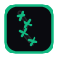
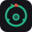

G — 缝合裂缝
Stitched Mend

NightMend
NightMend
MEND 字面视觉化：
盾内裂缝（坏掉的系统）+ emerald 缝合针脚（AI 在修补）
盾内裂缝（坏掉的系统）+ emerald 缝合针脚（AI 在修补）
这是"NightMend"三个字最直接的画。 产品名里的 "mend" = 缝合/修补，其他监控产品没人做过这个 motif。 唯一性 + 产品名耦合度 100%。
H — 闭眼 + 心跳
Sleeping Watcher
NightMend
NightMend
对应 TAGLINE：
"AI fixes alerts while you sleep"
闭眼（你在睡）+ 心跳（我们还醒着）
"AI fixes alerts while you sleep"
闭眼（你在睡）+ 心跳（我们还醒着）
产品 tagline 的视觉剧本。 闭合的眼睛 = 团队下班睡觉；emerald 心跳 = AI 仍在监控 + 修复。 叙事性最强，适合营销页 / 开机动画。
I — 自愈循环
Self-Healing Loop

NightMend
NightMend
对应核心能力：
AI Analyzes → Decides → Fixes → Learns
环上三点：Alert（红） → AI（绿） → Mended（绿）
AI Analyzes → Decides → Fixes → Learns
环上三点：Alert（红） → AI（绿） → Mended（绿）
竞争差异化的视觉化。 环上的红色断点 = 告警， emerald 闭合弧 = AI 修复轨迹；中心 AI 大脑驱动整个自愈闭环。 最贴合 "不只是监控，而是自愈平台" 的产品定位。